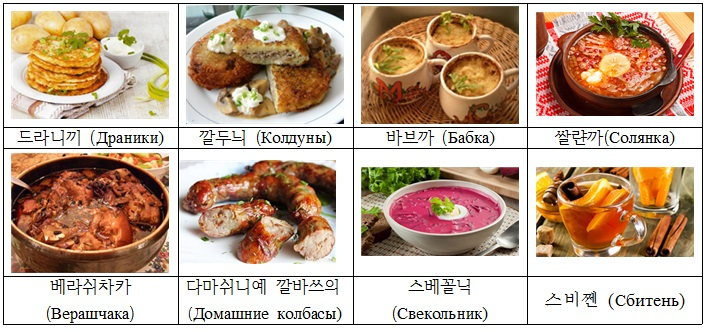
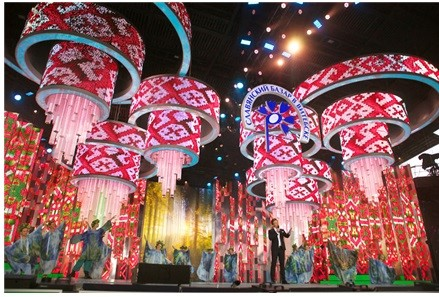

- Home
- Culture
- History
- tourism
- etc
전통 의상
벨라루스 민속 의상은 민족적 철학과 각 시대의 취향에 따라 변화되어 왔으며 유럽 다른 민족의 민속의상과 일맥상통한다.
벨라루스 전통 의상에서는 고대 전통, 슬라브 전통 및 인도유럽 전통의 특성을 발견할 수 있다.
여성의 전통 의상은 리넨 (linen, 아마) 원단으로 만들어 수를 넣거나 칼라 실을 넣어서 짠 장식이 있는 블라우스,
긴 털실 치마와 리넨 앞치마, 조끼와 수 높은 허리띠 등으로 구성돼 있다.
여성 복장과 남성 복장 모두 흰색과 빨강색이 주를 이루고 있다. 흰색은 '벨라루스'라는 명칭의 유래가 되기도 한 민족적인 특징을
표시하는 색이며 빨강색은 벨라루스 민족의 의식에서 생명, 혈액, 태양, 아름다움의 개념과 연관된다
이 두가지 색의 결합을 통해 상징성과 벨라루스 민족의 예술감각이 표현되어 있다.
벨라루스 민속의상의 수 장식에서는 우주와 우주 속의 사람에 대한 개념, 슬라브 토속 신앙,
사랑과 만수무강에 대한 기원이 함축되어 있다. 과거에는 수 장식은 사람을 부정적인 외부 영향으로 부터 보호하는 부적의 역할을
했으나 현재는 민족적인 상징의 의미를 갖는다.
전통 춤
전통 음식
벨라루스는 감자를 이용하여 다양한 종류의 음식을 만드는데 특히 한국의 감자전과 비슷한 맛을 가지고 있는 «드라니끼(Драники)»가 매우 유명합니다.
이 외에도 «드라니끼» 속에 고기를 넣은 «깔두늬(Колдуны)»와 작은 항아리 그릇에 감자와 고기, 야채를 함께 쪄서내는 «바브까(Бабка)»도 독특한 벨라루스의 감자요리에 속합니다.
양배추를 발효시켜 신맛이 나는 상태에서 절인 오이와 돼지고기, 버섯, 그리고 올리브를 넣어 요리한 «쌀랸까(Солянка)»라는 스프와, 전통 보리음료인 «크바스(Квас)»와 함께 조리하는
«베라쉬차카(Верашчака)»는 유명한 벨라루스 전통식중의 하나입니다.
소고기 또는 돼지고기를 다져 속을채운 소세지 요리인 «다마쉬니예 깔바쓰의 (Домашние колбасы)» 또한 맛볼만한 독특한 벨라루스 전통음식으로 꼽을 수 있습니다.
여름철에는 차가운 스프인 «스베꼴닉(Свекольник)»과 꿀이 들어간 «스비쩬(Сбитень)» 이라는 전통음료도 즐겨먹습니다.

축제
희극 축제, 무대예술 행사가 상시로 개최되고 있어 벨라루스인들은 풍요로운 문화생활을 향유하고 있다.
그 대표적인 예로는 1992년부터 매년 여름 비텝스크 시에서 열리는 '슬라뱐스키 바자르'(‘Slavic Bazaar’)라는 국제 음악축제가
대중적으로 가장 널리 알려져 있다. 러시아, 우크라이나 등의 동슬라브 국가 뿐만 아니라 총 60여 개국에서 예술 단체들이 참여한 적이 있다.
이 축제는 전통과 현대의 문화가 자연스럽게 어울리는 남녀노소 누구나 즐길 수 있는 축제로 그 인기가 매년 증가하고 있다.
